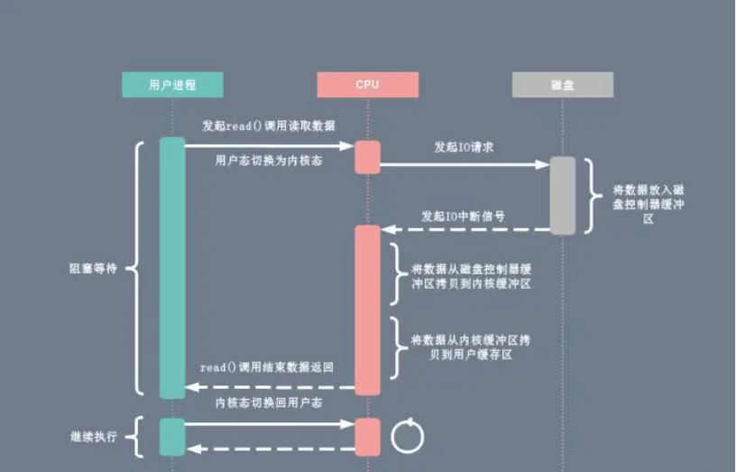
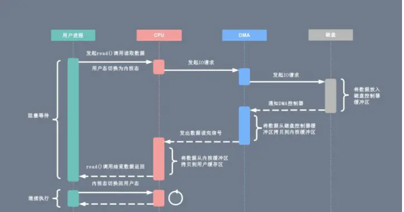
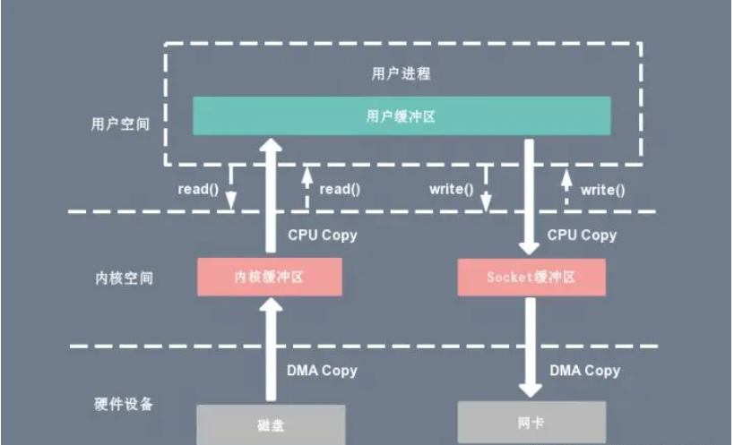
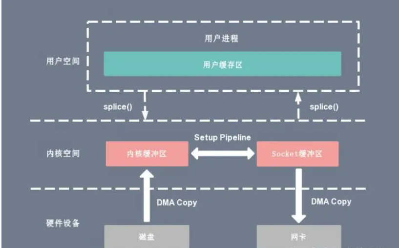

磁盘与内存之间的数据传输
Linux 提供了轮询、I/O 中断以及 DMA 传输这 3 种磁盘与主存之间的数据传输机制。
I/O 中断原理
每次用户进程读取磁盘数据时，都需要 CPU 中断，每次的 I/O 中断都导致 CPU 的上下文切换。
- 用户进程发起
read()系统调用读取数据，由用户态切换为内核态，然后一直阻塞等待数据的返回。 - CPU对磁盘发起 I/O 请求，将磁盘数据先放入磁盘控制器缓冲区。
- 数据准备完成以后，磁盘向 CPU 发起 I/O 中断。
- CPU 将磁盘缓冲区中的数据拷贝到内核缓冲区，然后再从内核缓冲区拷贝到用户缓冲区。
- 用户进程由内核态切换回用户态，解除阻塞状态。
DMA 传输原理
DMA 的全称叫直接内存存取（Direct Memory Access），是一种允许外围设备（硬件子系统）直接访问系统主内存的机制。也就是说，基于 DMA 访问方式，系统主内存于硬盘或网卡之间的数据传输可以绕开 CPU 的全程调度。
整个数据传输操作是在 DMA 控制器的控制下进行的。CPU 除了在数据传输开始和结束时做一点处理外（开始和结束时候要做中断处理），在传输过程中 CPU 可以继续进行其他的工作。这样在大部分时间里，CPU 计算和 I/O 操作都处于并行操作，使整个计算机系统的效率大大提高。
- 用户进程发起
read()系统调用读取数据，由用户态切换为内核态，然后一直阻塞等待数据的返回。 - CPU 在接收到指令以后对 DMA 磁盘控制器发起调度指令。
- DMA 磁盘控制器对磁盘发起 I/O 请求，将磁盘数据先放入磁盘控制器缓冲区，CPU 全程不参与此过程。
- 数据读取完成后，DMA 磁盘控制器会接受到磁盘的通知，将数据从磁盘控制器缓冲区拷贝到内核缓冲区。
- DMA 磁盘控制器向 CPU 发出数据读完的信号，由 CPU 负责将数据从内核缓冲区拷贝到用户缓冲区。
- 用户进程由内核态切换回用户态，解除阻塞状态。
传统 IO 方式
基于传统的 I/O 读取方式，read()/write() 系统调用会触发 2 次上下文切换，1 次 DMA 拷贝和 1 次 CPU 拷贝。
- 用户进程通过
read()方法向内核发起系统调用，上下文从用户态切换为内核态。 - DMA 控制器将数据从硬盘拷贝到内核缓冲区中。
- CPU 将缓冲区中的数据拷贝到用户缓冲区。
- 上下文从内核态切换回用户态，
read()调用执行返回。
零拷贝方式
mmap
mmap 是 Linux 提供的一种内存映射文件方法，即将一个进程的地址空间中的一段虚拟地址映射到磁盘文件地址。
使用 mmap 的目的是将内核中读缓冲区的地址与用户空间的缓冲区进行映射，从而实现内核缓冲区与应用程序内存的共享，省去了将数据从内核读缓冲区拷贝到用户缓冲区的过程，然而内核读缓冲区仍需将数据到内核写缓冲区，大致的流程如下图所示：
基于 mmap 系统调用的零拷贝方式，整个拷贝过程会发生 4 次上下文切换，1 次 CPU 拷贝和 2 次 DMA 拷贝，用户程序读写数据的流程如下：
- 用户进程通过
mmap()函数向内核发起系统调用，上下文从用户态切换为内核态。 - 将用户缓冲区与内核缓冲区进行内存地址映射。
- CPU 利用 DMA 控制器将数据从主存或硬盘拷贝到内核空间的读缓冲区。
- 上下文从内核态切换回用户态，
mmap系统调用执行返回。
sendfile
通过 sendfile 系统调用，数据可以直接在内核空间内部进行 I/O 传输，从而省去了数据在用户空间和内核空间之间的来回拷贝。
基于 sendfile 系统调用的零拷贝方式，整个拷贝过程会发生 2 次上下文切换，1 次 CPU 拷贝和 2 次 DMA 拷贝，用户程序读写数据的流程如下：
- 用户进程通过
sendfile()函数向内核发起系统调用，上下文从用户态切换为内核态。 - DMA 控制器将数据从主存或硬盘拷贝到内核空间的读缓冲区。
- CPU 将读缓冲区中的数据拷贝到的网络缓冲区。
- DMA 控制器将数据从网络缓冲区拷贝到网卡进行数据传输。
- 上下文从内核态切换回用户态，
sendfile()系统调用执行返回。
相比较于 mmap 内存映射的方式，sendfile 少了 2 次上下文切换，但是仍然有 1 次 CPU 拷贝操作。sendfile 存在的问题是用户程序不能对数据进行修改，而只是单纯地完成了一次数据传输过程。
splice
splice 系统调用可以在内核空间的读缓冲区和网络缓冲区之间建立管道，从而避免了两者之间的 CPU 拷贝操作。
基于 splice 系统调用的零拷贝方式，整个拷贝过程会发生 2 次上下文切换以及 2 次 DMA 拷贝，用户程序读写数据的流程如下：
- 用户进程通过
splice()函数向内核发起系统调用，上下文从用户态切换为内核态。 - DMA 控制器将数据从主存或硬盘拷贝到内核空间的读缓冲区。
- CPU 在内核空间的读缓冲区和网络缓冲区之间建立管道。
- DMA 控制器将数据从网络缓冲区拷贝到网卡进行数据传输。
- 上下文从内核态切换回用户态，
splice()系统调用执行返回。
splice 拷贝方式也同样存在用户程序不能对数据进行修改的问题。除此之外，它使用了 Linux 的管道缓冲机制，可以用于任意两个文件描述符中传输数据，但是它的两个文件描述符参数中有一个必须是管道设备。
零拷贝实现
RocketMQ：
mmap+ write，适用于业务级消息这种小块文件的数据持久化和传输。Kafka：
sendfile，适用于系统日志消息这种高吞吐量的大块文件的数据持久化和传输。Kafka 的索引文件使用的是
mmap+ write 方式，数据文件使用的是sendfile方式。